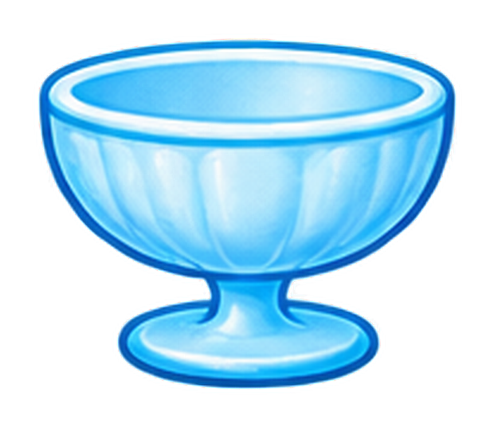

<!doctype html><html lang="ja"><meta charset="utf-8"><meta name="viewport" content="width=device-width,initial-scale=1,maximum-scale=1,user-scalable=no"><title>いろまぜかきごおり | あそびランド</title><style>*{box-sizing:border-box}body{margin:0;background:linear-gradient(#b8edff,#fff5dc);font-family:system-ui;color:#563b43}header{display:flex;align-items:center;justify-content:space-between;padding:10px 16px;background:#ffccde}a{color:inherit;font-weight:bold;text-decoration:none}h1{font-size:21px;margin:0}.wrap{display:grid;grid-template-columns:52% 48%;height:calc(100dvh - 54px)}.stage{display:flex;align-items:center;justify-content:center;position:relative}.stage svg{height:90%;width:95%;max-width:450px}.controls{padding:12px;overflow:hidden;background:#ffffffb8}button{font:inherit;font-weight:bold;border:0;border-radius:14px;padding:10px;cursor:pointer}.modes{display:flex;gap:8px;margin-bottom:10px}.modes button{background:#e5d4f5}.modes button.on{background:#a56fd8;color:white}.palette{display:grid;grid-template-columns:repeat(6,1fr);gap:12px;max-width:570px;margin:auto}.dot{aspect-ratio:1;display:grid;place-items:center;font-size:clamp(10px,1.25vw,15px);text-shadow:0 1px 2px #ffffff88;border:3px solid #fff;box-shadow:0 2px 4px #9998;border-radius:50%;touch-action:none;padding:0}.slots{display:flex;justify-content:center;gap:25px;margin:12px}.slot{height:68px;width:68px;border:3px dashed #a2a2a2;background:white;border-radius:50%;display:grid;place-items:center;font-size:13px;touch-action:none}.slot.filled{border:3px solid #795f72}.result{font-size:19px;font-weight:bold;text-align:center;margin:10px}.help{font-size:13px}.ghost{position:fixed;z-index:100;width:44px;height:44px;border-radius:50%;pointer-events:none;box-shadow:0 3px 9px #7778}@media(max-width:600px){.wrap{grid-template-columns:1fr;grid-template-rows:44% 56%}.controls{padding:8px}.palette{grid-template-columns:repeat(8,1fr);gap:5px}.slot{width:53px;height:53px}.stage svg{height:100%}h1{font-size:16px}}html,body{height:100%;overflow:hidden;overscroll-behavior:none}button,.dot,.slot{touch-action:none}.controls{min-height:0}.palette{grid-template-columns:repeat(8,minmax(0,1fr));gap:5px}.dot{max-height:43px;min-height:25px}.result{font-weight:bold;font-size:clamp(12px,2vw,19px)}@media(max-width:600px){.palette{grid-template-columns:repeat(8,minmax(0,1fr))}.controls{padding:6px}.dot{max-height:32px}.modes button{font-size:11px;padding:5px}.help{font-size:10px}}

/* v25 iPhone */
@media(max-width:700px) and (orientation:portrait){html,body{height:100%;overflow:hidden}.wrap{display:grid!important;grid-template-columns:1fr!important;grid-template-rows:40% 60%!important;height:calc(100dvh - 54px)!important}.stage{min-height:0;overflow:hidden}.controls{min-height:0;overflow-y:auto!important;padding:6px!important}.palette{grid-template-columns:repeat(6,minmax(0,1fr))!important;gap:5px!important}.dot{max-height:43px}.slots{margin:6px}.slot{width:45px;height:45px}.result{margin:5px;font-size:13px}}
</style><header><a href="./index.html">← あそびランド</a><h1> カラフルかきごおり</h1><button onclick="clearSlots()">↻</button></header><main class="wrap"><div class="stage"><svg viewBox="0 0 360 340"><rect x="8" y="5" width="344" height="330" rx="30" fill="#ffffff7d"/><g opacity=".65"><text x="30" y="50" font-size="32">🧪</text><text x="295" y="50" font-size="32">✨</text></g><image href="ice-bowl-raster.png" x="70" y="188" width="220" height="137" preserveAspectRatio="xMidYMid meet"/><defs><clipPath id="iceShape"><path d="M79 209 C77 195 86 182 94 171 C86 160 102 143 112 133 C109 117 127 109 140 102 C142 92 156 88 169 83 C175 72 191 70 201 82 C217 85 221 98 234 105 C247 113 253 122 263 137 C277 149 278 167 283 178 C288 193 284 208 277 211 C245 223 121 224 79 209Z"/></clipPath><linearGradient id="snow" x1="0" y1="0" x2="0" y2="1"><stop stop-color="#ffffff"/><stop offset=".64" stop-color="#f4fbff"/><stop offset="1" stop-color="#e3f1fc"/></linearGradient><linearGradient id="syrupShade" x1="0" y1="0" x2=".65" y2="1"><stop stop-color="#fff" stop-opacity=".38"/><stop offset=".50" stop-color="#fff" stop-opacity="0"/><stop offset="1" stop-color="#304867" stop-opacity=".16"/></linearGradient></defs>
<g clip-path="url(#iceShape)"><rect x="75" y="70" width="215" height="160" fill="url(#snow)"/>
<path d="M 75 196 Q 108 170 131 176 Q 157 152 177 161 Q 207 142 228 166 Q 256 160 289 184 L289 105 Q190 40 75 110 Z" id="icecolor" fill="#ffffff" opacity=".82"/>
<path d="M 84 199 C 120 189 157 192 188 178 C 224 180 246 188 278 194 L 285 215 L 80 215Z" fill="#ffffff" opacity=".48"/>
<path d="M103 151 l12 -11 10 7 -14 14 Z M148 123 l14 -10 8 10 -14 11 Z M199 117 l15 7 -10 11 -13 -8 Z M240 151 l10 8 -10 12 -9 -12 Z M131 180 l13 5 -8 12 -12 -4 Z M197 192 l12 -7 8 12 -11 8 Z" fill="#fff" opacity=".50"/>
<path d="M79 74H289V230H79Z" fill="url(#syrupShade)"/></g>
<path d="M79 209 C77 195 86 182 94 171 C86 160 102 143 112 133 C109 117 127 109 140 102 C142 92 156 88 169 83 C175 72 191 70 201 82 C217 85 221 98 234 105 C247 113 253 122 263 137 C277 149 278 167 283 178 C288 193 284 208 277 211" fill="none" stroke="#ceeafa" stroke-width="2"/>
<path d="M77 208 Q180 227 282 208" fill="none" stroke="#8bd6f6" stroke-width="5" stroke-linecap="round" opacity=".9"/><text x="180" y="320" text-anchor="middle" font-size="17" fill="#755065">ふたつの いろを まぜよう！</text></svg></div><section class="controls"><div class="modes"><button id="paint" class="on" onclick="mode='paint';render()">🎨 ふつうのシロップ</button><button id="light" onclick="mode='light';render()">✨ ピカピカシロップ</button></div><div class="slots"><div class="slot" data-slot="0">①</div><div class="slot" data-slot="1">②</div></div><div class="result" id="result">いろの まるを うえに ドラッグ！</div><div class="palette" id="palette"></div><p class="help">12色から2色の丸を空白の丸へ運んでね。タップしてから空欄をタップしてもOK。</p></section></main><script>
const colors=[['しろ','#fff8ec'],['きいろ','#ffe03b'],['だいだい','#f99732'],['あか','#ed3e43'],['ももいろ','#f7a0bd'],['むらさき','#9c6dcb'],['あお','#397ddd'],['みずいろ','#7dd5ec'],['みどり','#51b45b'],['きみどり','#a8ce57'],['ちゃいろ','#91613e'],['くろ','#35343a']];let mode='paint',slots=[null,null],selected=null;const $=id=>document.getElementById(id);function speak(s){try{speechSynthesis.cancel();let u=new SpeechSynthesisUtterance(s);u.lang='ja-JP';u.rate=.85;speechSynthesis.speak(u)}catch{}}function rgb(h){return [1,3,5].map(i=>parseInt(h.slice(i,i+2),16)/255)}function mix(a,b){let A=rgb(a),B=rgb(b);let c=A.map((v,i)=>{let q=mode==='light'?Math.min(1,v+B[i]):Math.sqrt(v*B[i]);return Math.round(q*255)});return '#'+c.map(x=>x.toString(16).padStart(2,'0')).join('')}function render(){['paint','light'].forEach(k=>$(k).classList.toggle('on',k===mode));document.querySelectorAll('.slot').forEach((e,i)=>{e.style.background=slots[i]===null?'white':colors[slots[i]][1];e.textContent=slots[i]===null?i+1:'';e.classList.toggle('filled',slots[i]!==null)});let result=slots.every(x=>x!==null);let hex=result?mix(colors[slots[0]][1],colors[slots[1]][1]):'#ffffff';$('icecolor').setAttribute('fill',hex);$('result').textContent=result?colors[slots[0]][0]+' ＋ '+colors[slots[1]][0]+' → '+(colors.find(x=>x[1].toLowerCase()===hex)?.[0]||'まざった いろ'):'いろを 2つ えらんでね';if(result)speak($('result').textContent)}function setSlot(i,n){slots[i]=n;selected=null;render()}document.querySelectorAll('.slot').forEach(e=>e.onclick=()=>{if(selected!==null)setSlot(+e.dataset.slot,selected)});colors.forEach((c,i)=>{let b=document.createElement('button');b.className='dot';b.textContent=c[0];b.style.background=c[1];b.style.color=['しろ','きいろ','みずいろ','きみどり','ももいろ'].includes(c[0])?'#3b3543':'white';b.title=c[0];b.setAttribute('aria-label',c[0]);b.onclick=()=>{selected=i;speak(c[0])};b.onpointerdown=e=>{e.preventDefault();if(e.pointerType==='mouse')return;selected=i;let ghost=document.createElement('div');ghost.className='ghost';ghost.style.background=c[1];document.body.append(ghost);const move=ev=>{ghost.style.left=ev.clientX-22+'px';ghost.style.top=ev.clientY-22+'px'};move(e);b.setPointerCapture(e.pointerId);b.onpointermove=move;b.onpointerup=ev=>{let target=document.elementFromPoint(ev.clientX,ev.clientY)?.closest('.slot');if(target)setSlot(+target.dataset.slot,i);ghost.remove();b.onpointermove=null;b.onpointerup=null}};$('palette').append(b)});function clearSlots(){slots=[null,null];render()}render();
</script></html>

<!-- v27: 12色のクレパス風パレット。選択・ドラッグ・混色機能は維持。 -->
